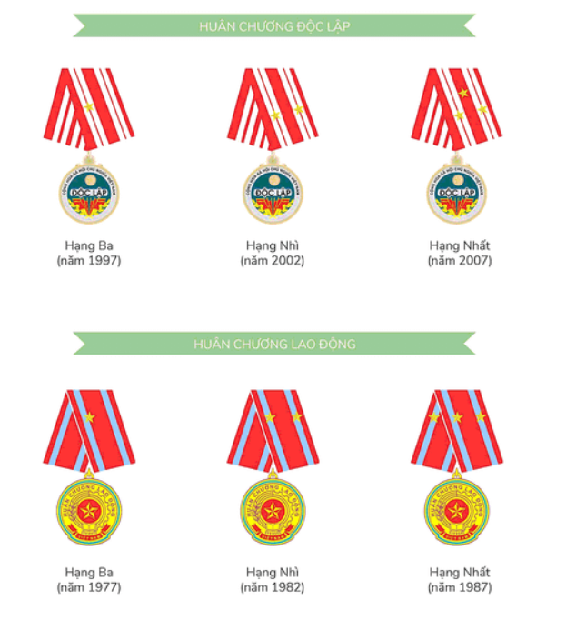

GHI NHẬN CỦA NHÀ NƯỚC VÀ CÁC TỔ CHỨC XÃ HỘI
04/06/21
I. KHEN THƯỞNG CỦA NHÀ NƯỚC

II. KHEN THƯỞNG CỦA CHÍNH PHỦ
- Cờ thi đua của Thủ tướng Chính phủ năm 1994
- Bằng khen của Thủ tướng Chính phủ năm 2001
- Bằng khen của Thủ tướng Chính phủ năm 2006
III. KHEN THƯỞNG CỦA TW ĐOÀN TNCS HỒ CHÍ MINH
- Bằng khen của BCH TW Đoàn TNCS Hồ Chí Minh tặng đơn vị hoàn thành xuất sắc nhiệm vụ năm 1978, năm 1979, năm 1980, năm 1981, năm 1982, năm 1983, năm 1984, năm 1985, năm 1986, năm 1987, năm 1988, năm 1989, năm 1990, năm 2007, năm 2008, năm 2009, năm 2010, năm 2011, năm 2012, năm 2013, năm 2014, năm 2015
- Bằng khen của BCH TW Đoàn TNCS Hồ Chí Minh công nhận đơn vị đạt danh hiệu Tổ, Đội LĐ XSCN năm 1991, năm 1992, năm 1993, năm 1994
- Bằng khen của BCH TW Đoàn TNCS Hồ Chí Minh khen thưởng đơn vị có thành tích hoàn thành xuất sắc nhiệm vụ trong 5 năm (1991 - 1995)
- Bằng khen của BCH TW Đoàn TNCS Hồ Chí Minh công nhận tập thể lao động tiên tiến xuất sắc năm 1996, năm 1997, năm 1998, năm 1999, năm 2000, năm 2001, năm 2002, năm 2003, năm 2004, năm 2005, năm 2006
- Năm liền đạt danh hiệu tập thể lao động xuất sắc do Trung ương Đoàn trao tặng (1997-2002).
- Bằng khen BCH Công đoàn Viên chức Việt Nam cho đơn vị đã có thành tích xuất sắc trong 10 năm thực hiện cuộc vận động xây dựng người cán bộ, công chức, viên chức "Trung thành - Sáng tạo - Tận tụy - Gương mẫu" (1999 - 2009)
- Bằng khen của BCH Công đoàn Viên chức Việt Nam cho đơn vị đã có thành tích xuất sắc trong phong trào thi đua xây dựng cơ quan và tổ chức CĐ vững mạnh 2009. Đã có thành tích xuất sắc trong phong trào "Giỏi việc nước, đảm việc nhà" 5 năm (2005 - 2009)
- Bằng khen của BCH TW Đoàn TNCS Hồ Chí Minh cho đơn vị đã có thành tích xuất sắc trong phong trào thi đua yêu nước cơ quan TW Đoàn giai đoạn 2005 - 2010
- Bằng khen của BCH Đảng bộ khối cơ quan TW cho Chi bộ đạt trong sạch vững mạnh tiêu biểu 3 năm 2008 - 2010
- Giấy khen của BCH Đảng bộ TW Đoàn TNCS Hồ Chí Minh. Đã có thành tích xuất sắc 3 năm thực hiện Cuộc vận động "Học tập và làm theo tấm gương đạo đức Hồ Chí Minh". Có thành tích xuất sắc trong công tác xây dựng Đảng năm 2010. Đã có thành tích xuất sắc trong 4 năm thực hiện Cuộc vận động "Học tập và làm theo tấm gương đạo đức Hồ Chí Minh"
- Giấy khen của BCH Công đoàn cơ quan TW Đoàn về thành tích xuất sắc trong công tác Công đoàn năm 2010
- Cờ của BCH Đảng bộ khối cơ quan TW. Đạt danh hiệu tập thể lao động xuất sắc năm 2015
- Bằng khen của BCH TW Đoàn TNCS Hồ Chí Minh về thành tích xuất sắc trong phong trào thi đua yêu nước giai đoạn 2005 - 2010, 2010 - 2015
- Bằng khen của BCH TW Đoàn TNCS Hồ Chí Minh đơn vị hoàn thành xuất sắc nhiệm vụ liên tục từ năm 2007 đến năm 2015
IV. KHEN THƯỞNG CỦA BỘ VĂN HÓA THÔNG TIN
- Bằng khen của Bộ Văn hóa Thông tin tặng đơn vị hoàn thành xuất sắc nhiệm vụ công tác trong 20 năm (1957 - 1977)
- Bằng khen của Bộ Văn hóa Thông tin tặng đơn vị hoàn thành xuất sắc nhiệm vụ công tác năm 2000, năm 2005
V. KHEN THƯỞNG CỦA BỘ THÔNG TIN VÀ TRUYỀN THÔNG
- Bằng khen của Bộ trưởng Bộ Thông tin và Truyền thông về thành tích xuất sắc trong công tác xuất bản năm 2009
VI. KHEN THƯỞNG CỦA CÁC CƠ QUAN, BAN NGÀNH KHÁC
- Bằng khen của Khối cơ quan Dân vận TW (1999)
- Bằng khen của Bộ Tài chính (2001)
- Bằng khen của UBND tỉnh Nam Định (2001)
- Bằng khen của UBND Quảng Nam (2001)
- Bằng khen của Ban chấp hành Đảng bộ cơ quan TW Đoàn TNCS Hồ Chí Minh (2004)
- Bằng khen của BCH Công đoàn viên chức Việt Nam (2004)
- Bằng khen của UBND Thành phố Hà Nội (2005)
- Bằng khen của Hội Nhà văn Việt Nam vì có thành tích đóng góp xứng đáng vào nền văn học cả nước
VII. CÁC HUÂN CHƯƠNG ĐÃ ĐƯỢC TRAO TẶNG
- Huy chương Vì thế hệ trẻ của TW Đoàn TNCS Hồ Chí Minh
- Huy chương Vì sự nghiệp Mỹ thuật Việt Nam của BCH Hội Mỹ thuật Việt Nam
- Huy chương Vì sự nghiệp Công đoàn của Tổng Liên đoàn Lao động Việt Nam
- Huy chương Vì sự nghiệp chăm sóc trẻ em của Ủy ban bảo vệ và chăm sóc trẻ em Huy chương Vì thế hệ Trẻ do Trung ương Đoàn trao tặng
VIII. GIẢI THƯỞNG SÁCH HAY, SÁCH ĐẸP
- Một số giải thưởng quốc tế và trong nước cho sách Kim Đồng:
- Bằng DIPLOME của Liên đoàn Phụ nữ thế giới và Liên đoàn Thanh niên thế giới năm 1960
- Bằng DIPLOME của Triển lãm sách quốc tế Maxcova và giải ba cho cuốn tranh truyện thơ "Phú Đồng thiên vương" năm 1970
- Huy chương Bạc cho cuốn sách tranh "Sát Thát" tại Triển lãm Nghệ thuật sách quốc tế IBA - 1971
- Bằng khen cho cuốn "Nhà dày cho điều ước" tại Triển lãm sách Quốc tế tại Leipzig (Cộng hòa dân chủ Đức) năm 1971
- Bằng khen cho cuốn "Tấm Cám" tại Triển lãm sách Thiếu nhi ở Tiệp Khắc năm 1985
- Bằng khen đặc biệt cho cuốn "Cô em Vệ Tinh", bằng khen Nhi đồng cho cuốn "Tập làm người tốt", bằng khen cho cuốn "Xóm trại nhà vườn", bằng khen Ba cho cuốn "Chiếc hai chuông nhỏ" tại Triển lãm Nghệ thuật sách thiếu nhi do Bộ Văn hóa tổ chức năm 1975
- Giải nhất cho cuốn sách ảnh "45 hoạt động của Đảng Lao động Việt Nam" và cuốn sách màu "Theo chân Bác", giải Nhì cho cuốn sách ảnh bìa cứng "Cuộc em Vệ Tinh", giải Ba cho cuốn "Những chàng Dũng cảm Trung Dương" tại Triển lãm Nghệ thuật sách thiếu nhi năm 1975
- Hàng năm, sách Kim Đồng liên tục nhận được các Giải thưởng Sách hay - Sách đẹp do Hội xuất bản Việt Nam trao tặng
IX. CÁC HÌNH THỨC KHIÊN THƯỞNG KHÁC
- Bằng khen của các bộ, ngành, các ủy ban uy tín cả nước
- Bằng khen của Hội xuất bản Việt Nam là Hàng Việt Nam chất lượng cao hàng năm
- Bằng khen của Ban Khoa giáo Đài Truyền hình Việt Nam - Hội Nhạc sĩ Việt Nam - Ban Ảnh Đài Tiếng nói Việt Nam - Báo Thiếu niên Tiền phong